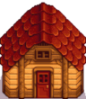
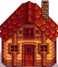

Schuppen
| Schuppen | Großer Schuppen | ||
|  |  | ||
|---|---|---|---|
| Information | |||
| Beschreibung | Ein leeres Gebäude. Fülle es mit was auch immer du willst! Der Innenraum kann eingerichtet werden. | Verdoppelt die Größe des Schuppens. Der Innenraum kann dekoriert werden. | |
| benötigt | N/A | Schuppen | |
| Baukosten | |||
| Baumaterialien | |||
| Größe | 7x3 |
7x3 | |
Ein Schuppen ist ein Hofgebäude, welches bei Robin im Schreinerladen für  15.000 G gekauft werden kann. Die Erweiterung zum Großen Schuppen kostet
15.000 G gekauft werden kann. Die Erweiterung zum Großen Schuppen kostet  20.000 G.
20.000 G.
Grundlagen
Der Schuppen kann von innen gestalten, wie man möchte. Man kann wie auch im Bauernhaus Möbel, Tapeten und Bodenbeläge platzieren, genauso wie alle Geräte, z.B. Fässer, Mayonnaise-Maschinen etc. Die Innenfläche des Schuppens beträgt 11x9 (99 nutzbare Felder), die äußere Fläche beträgt 7x3, damit kann man also mehr Fläche auf weniger Raum benutzen.
Die innere Fläche des Großen Schuppens ist 17x12 (204 nutzbare Felder), die äußere Fläche bleibt dabei gleich. Der große Schuppen bietet also etwa doppelt so viel Innenfläche wie der normale.
Galerie

Das anfänglich kahle Innere des Schuppens

Das vergrößerte, kahle Innere des Großen Schuppen

Die optimale Platzierung von Fässern im Schuppen: 67 benutzte Plätze
Optimal ausgenutzte Fläche im Großen Schuppen: 137 Felder
Geschichte
| Gebäude | ||
|---|---|---|
| Händler | Abenteurergilde • Anglerbedarf • Bruchbude • Buchhändler • Eisstand • Geheimes Walnusszimmer von Mr. Qi • Inselhändler • Joja-Markt • Kasino • Klinik • Kneipe • Marnies Ranch • Oase • Pierres Gemischtwarenladen • Reisewagen • Schmied • Schreinerladen • Turm des Zauberers • Vulkanzwerg • Wüstenhändler | |
| Häuser | Bauernhaus • Baumhaus • Bergstraße 24 • Elliotts Hütte • Flussstraße 1 • Flussstraße 2 • Haus des Bürgermeisters • Insel-Farmhaus • Leahs Hütte • Weidengasse 1 • Weidengasse 2 • Wohnwagen • Zelt | |
| Bauernhof Gebäude | Bauernhof | Brunnen • Fischteich • Gewächshaus • Hühnerstall • Hütte • Mühle • Pferdestall • Schleim-Stall • Schuppen • Silo • Stall |
| Spezial | Erdobelisk • Goldene Uhr • Hof-Obelisk • Insel-Obelisk • Junimo-Hütte • Wasserobelisk • Wüsten Obelisk | |
| andere Gebäude | Gemeinschaftszentrum • Hexenhütte • Hundehütte • Insel-Außenstelle • Joja-Warenhaus • Kanalisation • Kino • Museum • Spa | |